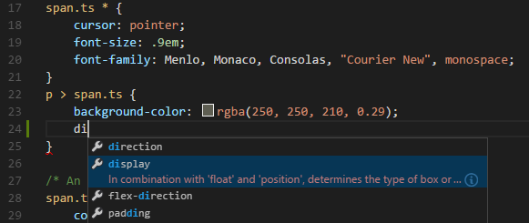
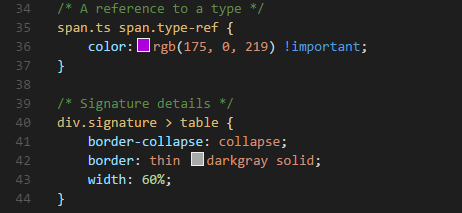
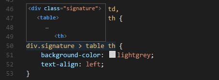

CSS, Sass and Less
VS Code内置对样式表编辑的支持，对于CSS .css, Sass .scss 和 Less .less。这些支持包括：
Visual Studio Code has built-in support for editing style sheets in CSS .css, Sass .scss and Less .less. This support includes:
智能感知 IntelliSense
我们提供对选择器，属性以及值的支持。按 kb(editor.action.triggerSuggest) 会得到一个具体列表。
We have support for selectors, properties and values. Use kb(editor.action.triggerSuggest) to get a list of context specific options.

建议中包括大量的文档，其中包括一个对浏览器兼容性的建议列表。如果对选中项想看完整描述按 kb(toggleSuggestionDetails)（哎哎为什么我的快捷键不好用。。2016-5-14）.
Proposals contain extensive documentation, including a list of browsers that support the property. To see the full description text of the selected entry, use kb(toggleSuggestionDetails).
Emmet语法 Emmet snippets
按 kb(editor.emmet.action.expandAbbreviation) 拓展当前缩写
小贴士: Emmet对CSS的支持详见 Emmet cheat sheet.
我们同样支持 用户定义代码段.
Press kb(editor.emmet.action.expandAbbreviation) to expand the current abbreviation.
Tip: See the CSS section of the Emmet cheat sheet for valid abbreviations.
We also support User Defined Snippets.
语法高亮及颜色浏览 Syntax coloring & Color preview
当你编辑CSS样式时，VS Code提供语法高亮以及对你所设置的颜色浏览。
As you type, we provide syntax highlighting as well as in context preview of colors.

语法验证 Syntax Verification & Linting
该功能对 CSS 版本 <= 2.1, Sass 版本 <= 3.2 and Less 版本 <= 1.7有效。
注意: 你可以在通过在用户定义代码段 设置来禁用VS Code对于CSS,Sass或者Less的默认语法验证。
"css.validate": false
We support CSS version <= 2.1, Sass version <= 3.2 and Less version <= 1.7.
Note: You can disable VS Code's default CSS, Sass or Less validation by setting the corresponding
.validateUser or Workspace setting to false."css.validate": false
转到文件的符号信息 Goto symbol in file
按 kb(workbench.action.gotoSymbol)即可。
Simply press kb(workbench.action.gotoSymbol).
Hovers
鼠标停留在选择器上将会得到一个通过CSS规则匹配的HTML代码片段。
Hovering over a selector or property will provide an HTML snippet that is matched by the CSS rule.

声明跳转及引用查找 Goto Declaration and Find References
在同一个文件里支持Sass和Less的变量实现此功能。
注意:对于夸文件的引用 ('imports') 是无效的.
This is supported for Sass and Less variables in the same file.
Note: Cross file references ('imports') are not resolved.
将Sass和Less编译成CSS Transpiling Sass and Less into CSS
VS Code可以通过自带的task runner将Sass和Less编译为CSS。我们可以用这个功能将 .scss 或者 .less 文件编译为 .css ，这个功能对一个简单的Sass/Less文件有效。
VS Code can integrate with Sass and Less transpilers through our integrated task runner. We can use this to transpile .scss or .less files into .css files. Let's walk through transpiling a simple Sass/Less file.
第一步：安装一个Sass或者Less的编译器。Step 1: Install a Sass or Less transpiler
对此，可以使用node-sass 或者 less 这两个Node.js 的模块。
注意: 如果你没有 Node.js 以及没有安装 NPM 包管理器,你得装。 在你的系统安装Node.js. Node Package Manager (NPM) 会随着Node.js安装.你只要打开一个新的命令行终端输入
npm install -g node-sass less
For this walkthrough, let's use either the node-sass or less Node.js module.
Note: If you don't have Node.js and the NPM package manager already installed, you'll need to do so for this walkthrough. Install Node.js for your platform. The Node Package Manager (NPM) is included in the Node.js distribution. You'll need to open a new terminal (command prompt) for
npmto be on your PATH.
npm install -g node-sass less
第二步：新建一个简单的Sass或者Less文件。 Step 2: Create a simple Sass or Less file
在VS Code打开一个空的文件夹并且创建 styles.scss 或者 styles.less 文件.然后把下面的代码放入文件。
（如果是less文件，把$padding 改成 @padding即可。）
$padding: 6px;
nav {
ul {
margin: 0;
padding: $padding;
list-style: none;
}
li { display: inline-block; }
a {
display: block;
padding: $padding 12px;
text-decoration: none;
}
}
注意:这是个非常简单的例子。这就是为什么源代码在两种文件类型中几乎是相同的。
Open VS Code on an empty folder and create a styles.scss or styles.less file. Place the following code in that file:
$padding: 6px;
nav {
ul {
margin: 0;
padding: $padding;
list-style: none;
}
li { display: inline-block; }
a {
display: block;
padding: $padding 12px;
text-decoration: none;
}
}
For the Less version of the above file, just change $padding to @padding.
Note: This is a very simple example, which is why the source code is almost identical between both file types. In more advanced scenarios, the syntaxes and constructs will be much different.
第三步：创建Create tasks.json Step 3: Create tasks.json
下一步是进行任务配置。按 kb(workbench.action.showCommands) 打开命令面板。按Enter选择“任务：配置任务运行程序”，在选择对话框中，选择“其他(Others)”。
这将会在工作空间的.vscode 文件夹创建一个tasks.json示例文件。这个文件包含了一个可以执行任意命令的样例。我们可以简单修改下编译配置。
// Sass configuration
{
"version": "0.1.0",
"command": "node-sass",
"isShellCommand": true,
"args": ["styles.scss", "styles.css"]
}
// Less configuration
{
"version": "0.1.0",
"command": "lessc",
"isShellCommand": true,
"args": ["styles.less", "styles.css"]
}
VS Code将node-sass or lessc当作一个外部任务处理器：将Sass/Less files编译为CSS文件。我们需要的执行命令就是 node-sass styles.scss styles.css 或者 lessc styles.less styles.css.
The next step is to set up the task configuration. To do this open the Command Palette with kb(workbench.action.showCommands) and type in Configure Task Runner, press kbstyle(Enter) to select it. In the selection dialog that shows up, select Others.
This will create a sample tasks.json file in the workspace .vscode folder. The initial version of file has an example to run an arbitrary command. We will simply modify that configuration for transpiling Less/Sass instead:
// Sass configuration
{
"version": "0.1.0",
"command": "node-sass",
"isShellCommand": true,
"args": ["styles.scss", "styles.css"]
}
// Less configuration
{
"version": "0.1.0",
"command": "lessc",
"isShellCommand": true,
"args": ["styles.less", "styles.css"]
}
VS Code interprets node-sass or lessc as an external task runner exposing exactly one task: the transpiling of Sass/Less files into CSS files. The command we run is node-sass styles.scss styles.css or lessc styles.less styles.css.
第四步：编译 Step 4: Run the Build Task
因为这个文件只有这一个任务，你可以直接按 kb(workbench.action.tasks.build) (Run Build Task)来编译。样例文件不应该出现任何编译问题，所以只会生成相应的 styles.css
As this is the only task in the file, you can execute it by simply pressing kb(workbench.action.tasks.build) (Run Build Task). The sample Sass/Less file should not have any compile problems, so by running the task all that happens is a corresponding styles.css file is created.
自动化Sass/Less编译 Automating Sass/Less compilation
你也可以试试往前再走一步——用VS Code进行自动化Sass/Less编译。我们用和以前相同的任务执行（task runner），但是要做些修改。
Let's take things a little further and automate Sass/Less compilation with VS Code. We can do so with the same task runner integration as before, but with a few modifications.
第一步：安装Gulp和一些插件。 Step 1: Install Gulp and some plug-ins
我们用Gulp来创建任务使Sass/Less自动化编译。同样用到gulp-sass 这个插件。Less的话用 gulp-less这个插件。
先安装 gulp(不要用 -g)
npm install gulp gulp-sass gulp-less
注意:
gulp-sass和gulp-less是Gulp对于node-sass和lessc这两个我们以前用过的模块的插件 也有许多其他Gulp的Sass和Less插件可供选择,以及Grunt的插件。
We will use Gulp to create a task that will automate Sass/Less compilation. We will also use the gulp-sass plug-in to make things a little easier. The Less plug-in is gulp-less.
We need to install gulp locally (no -g switch):
npm install gulp gulp-sass gulp-less
Note:
gulp-sassandgulp-lessare Gulp plug-ins for thenode-sassandlesscmodules we were using before. There are many other Gulp Sass and Less plug-ins you can use, as well as plug-ins for Grunt.
第二步：创建个简单的Gulp任务 Step 2: Create a simple Gulp task
在VS Code打开之前的文件夹(包含 styles.scss/styles.less 和在 .vscode 文件夹下的 tasks.json)并且在根目录下创建 gulpfile.js。然后把下面的代码复制进去。
// Sass configuration
var gulp = require('gulp');
var sass = require('gulp-sass');
gulp.task('sass', function() {
gulp.src('*.scss')
.pipe(sass())
.pipe(gulp.dest(function(f) {
return f.base;
}))
});
gulp.task('default', ['sass'], function() {
gulp.watch('*.scss', ['sass']);
})
// Less configuration
var gulp = require('gulp');
var less = require('gulp-less');
gulp.task('less', function() {
gulp.src('*.less')
.pipe(less())
.pipe(gulp.dest(function(f) {
return f.base;
}))
});
gulp.task('default', ['less'], function() {
gulp.watch('*.less', ['less']);
})
这样会发生什么呢？
- 我们
default的gulp任务在启动时首先运行过去的sass或者less任务。 - 会监听到之后工作空间根目录下任何Sass/Less文件的变化。例如在VS Code打开当前文件夹。（留个坑回来填，这句话好像理解的不对。）
- 一旦源文件有变动，就会用我们的编译器自动生成编译后的版本。例如
gulp-sass,gulp-less. - We now have a set of CSS files, each named respectively after their original Sass/Less file. We then put these files in the same directory.
Open VS Code on the same folder from before (contains styles.scss/styles.less and tasks.json under the .vscode folder), and create gulpfile.js at the root.
Place the following code in the gulpfile.js file:
// Sass configuration
var gulp = require('gulp');
var sass = require('gulp-sass');
gulp.task('sass', function() {
gulp.src('*.scss')
.pipe(sass())
.pipe(gulp.dest(function(f) {
return f.base;
}))
});
gulp.task('default', ['sass'], function() {
gulp.watch('*.scss', ['sass']);
})
// Less configuration
var gulp = require('gulp');
var less = require('gulp-less');
gulp.task('less', function() {
gulp.src('*.less')
.pipe(less())
.pipe(gulp.dest(function(f) {
return f.base;
}))
});
gulp.task('default', ['less'], function() {
gulp.watch('*.less', ['less']);
})
What is happening here?
- Our
defaultgulp task first runs thesassorlesstask once when it starts up. - It then watches for changes to any Sass/Less file at the root of our workspace, for example the current folder open in VS Code.
- It takes the set of Sass/Less files that have changed and runs them through our respective compiler, for example
gulp-sass,gulp-less. - We now have a set of CSS files, each named respectively after their original Sass/Less file. We then put these files in the same directory.
Step 3: Modify the configuration in tasks.json for watching
To complete the tasks integration with VS Code, we will need to modify the task configuration from before, to set a watch on the default Gulp task we just created. Your tasks configuration should now look like this:
{
"version": "0.1.0",
"command": "gulp",
"isShellCommand": true,
"tasks": [
{
"taskName": "default",
"isBuildCommand": true,
"showOutput": "always",
"isWatching": true
}
]
}
Step 4: Run the Build Task
Again, as this is the only task in the file you can execute it by simply pressing kb(workbench.action.tasks.build) (Run Build Task). But this time, we've set a watch so the Status Bar should indicate that on the left-hand side.

At this point, if you create and/or modify other Less/Sass files, you will see the respective CSS files generated and/or changes reflected on save. You can also enable Auto Save to make things even more streamlined.
If you want to stop the watch, you can press kb(workbench.action.tasks.build) again and click Terminate Running Task in the message box. Or you can use the Command Palette with kb(workbench.action.showCommands) and find the terminate command there.
Customizing CSS, Sass and Less Settings
You can configure the following lint warnings as User and Workspace Settings.
The validate setting allows you turn off the built-in validation. You would do this if you rather use a different linter.
| Id | Description | Default |
|---|---|---|
| css.validate | Enables or disables all css validations | true |
| less.validate | Enables or disables all less validations | true |
| sass.validate | Enables or disables all sass validations | true |
To configure an option for CSS, use css.lint. as the prefix to the id; for Sass and Less, use less.lint. and sass.lint..
Set a setting to warning or error if you want to enable lint checking, use ignore to disable it. Lint checks are performed as you type.
| Id | Description | Default |
|---|---|---|
| validate | Enables or disables all validations | true |
| compatibleVendorPrefixes | When using a property with a vendor-specific prefix (for example -webkit-transition), make sure to also include all other vendor-specific properties eg. -moz-transition, -ms-transition and -o-transition |
ignore |
| vendorPrefix | When using a property with a vendor-specific prefix for example -webkit-transition, make sure to also include the standard property if it exists eg. transition |
warning |
| duplicateProperties | Warn about duplicate properties in the same ruleset | ignore |
| emptyRules | Warn about empty rulesets | warning |
| importStatement | Warn about using an import statement as import statements are loaded sequentially which has a negative impact on web page performance |
ignore |
| boxModel | Do not use width or height when using padding or border |
ignore |
| universalSelector | Warn when using the universal selector * as it is known to be slow and should be avoided |
ignore |
| zeroUnits | Warn when having zero with a unit e.g. 0em as zero does not need a unit. |
ignore |
| fontFaceProperties | Warn when using @font-face rule without defining a src and font-family property |
warning |
| hexColorLength | Warn when using hex numbers that don't consist of three or six hex numbers | error |
| argumentsInColorFunction | Warn when an invalid number of parameters in color functions e.g. rgb |
error |
| unknownProperties | Warn when using an unknown property | warning |
| ieHack | Warn when using an IE hack *propertyName or _propertyName |
ignore |
| unknownVendorSpecificProperties | Warn when using an unknown vendor-specific property | ignore |
| propertyIgnoredDueToDisplay | Warn when using a property that is ignored due to the display. For example with display: inline, the width, height, margin-top, margin-bottom, and float properties have no effect. |
warning |
| important | Warn when using !important as it is an indication that the specificity of the entire CSS has gotten out of control and needs to be refactored. |
ignore |
| float | Warn when using float as floats lead to fragile CSS that is easy to break if one aspect of the layout changes. |
ignore |
| idSelector | Warn when using selectors for an id #id as selectors should not contain IDs because these rules are too tightly coupled with the HTML. |
ignore |
接下来... Next Steps
看看关于...
Read on to find out about:
- 任务：配置运行程序 - 深入挖掘这个能帮助你将Sass和Less编译成CSS。
- 提升编辑体验 -了解编辑器对语言提供的丰富的功能集，正如CSS。
HTML - 除了CSS，HTML在VS Code中同样被很好的支持。
Configure Tasks - Dig into Tasks to help you transpile your Sass and Less to CSS.
- Editing Evolved - Find out about the rich set of features the editor offers for languages such as CSS.
- HTML - CSS is just the start, HTML is also very well supported in VS Code.
常见问题解答 Common Questions
Q: VS Code提供拾色器吗
A: 不提供。
Q: VS Code支持基于Sass的缩进语法吗 ?
A: 不支持。
Q: Do you provide a color selector?
A: No, this is currently not supported.
Q: Do you support the indentation based Sass syntax (.sass) ?
A: No, not yet.